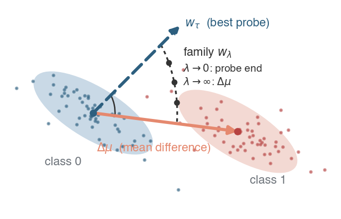
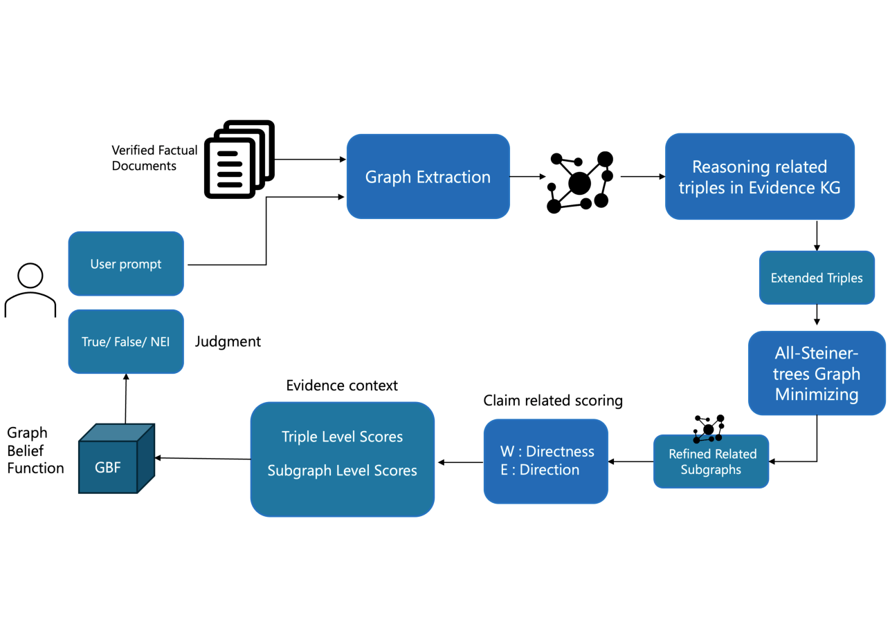

Latest research
Two lines of work, each with an interactive page that walks through the paper.
Connections between LLM representations
Is the direction in a model’s hidden state that detects a concept the same one that changes the model’s behavior? And how much of this carries over from one model to another?
Graph inference for fact checking
Replacing opaque LLM-as-judge verdicts with explicit belief-function reasoning over retrieved knowledge-graph triples, so factuality checks are traceable and more reliable.

Do Probing and Steering Favor the Same Directions Within and Across Language Models?
Across three instruction-tuned models, the best probe is not the best steering direction. Explore the geometry, the layer sweep, and cross-model transfer.
Open the interactive page →
Evidential Graph Reasoning for LLM Factuality: A Belief-Function Fusion of Retrieved Triples
Fact checking by combining evidence from knowledge-graph triples with belief functions, instead of asking an LLM to judge. Combine the evidence yourself and watch conflict appear.
Open the interactive page →News
Most recent first.
- Nov 2026Paper accepted at the NeurIPS 2026 Workshop on Unifying Representations in Neural Models: Do Probing and Steering Favor the Same Directions Within and Across Language Models? Interactive page
- Nov 2026Paper accepted at EACL 2027 (Findings): Evidential Graph Reasoning for LLM Factuality: A Belief-Function Fusion of Retrieved Triples. Interactive page
- Feb 2026White paper Robustness and Reproducibility for Data-Driven Weather Forecasting published for the Destination Earth initiative (ECMWF). PDF
- 2024Building Virtual Patients Using Simulation-Based Inference published in Frontiers in Systems Biology. Paper
- 2023Completed my PhD in Artificial Intelligence at the University of Bonn, magna cum laude.
- 2021Papers at NeurIPS, ECML-PKDD and SEMANTiCS.
- 2020MDE, a multi-distance embedding model for knowledge-graph link prediction, published at ECAI.
Publications
Selected. 20+ peer-reviewed in total; the full list is on Google Scholar.
-
Do Probing and Steering Favor the Same Directions Within and Across Language Models?A. Sadeghi et al.NeurIPS 2026 Workshop on Unifying Representations in Neural Models
-
Evidential Graph Reasoning for LLM Factuality: A Belief-Function Fusion of Retrieved TriplesA. Sadeghi et al.EACL 2027 (Findings)
-
Robustness and Reproducibility for Data-Driven Weather ForecastingS. Schmidt, M. Akila, A. Sadeghi, E. Prjadka, D. Benn-MaksimovicDestination Earth white paper, ECMWF 2026
-
Building Virtual Patients Using Simulation-Based InferenceN. Paul, V. Karamitsou, C. Giegerich, A. Sadeghi, M. Lücke, B. Wagenhuber, A. Kister, M. RehbergFrontiers in Systems Biology 2024Includes experiments on generating virtual patients using diffusion models.
-
Relational Pattern Benchmarking on the Knowledge Graph Link Prediction TaskA. Sadeghi, H. Abdul Malik, D. Collarana, J. LehmannNeurIPS 2021
-
Embedding Knowledge Graphs Attentive to Positional and Centrality QualitiesA. Sadeghi, D. Collarana, D. Graux, J. LehmannECML-PKDD 2021
-
BenchEmbedd: A FAIR Benchmarking Tool for Knowledge Graph EmbeddingsA. Sadeghi, X. Shahini, M. Schmitz, J. LehmannSEMANTiCS 2021
-
MDE: Multiple Distance Embeddings for Link Prediction in Knowledge GraphsA. Sadeghi, D. Graux, H. Shariat Yazdi, J. LehmannECAI 2020
-
Meta-Hyperband: Hyperparameter Optimization with Meta-Learning and Coarse-to-FineS. Payrosangari, A. Sadeghi, D. Graux, J. LehmannIDEAL 2020
-
Opening and Reusing Transparent Peer Reviews with Automatic Article AnnotationA. Sadeghi, S. Capadisli, J. Wilm, C. Lange, P. MayrPublications (MDPI) 2019
-
Linking Physicians to Medical Research Results via Knowledge Graph Embeddings and TwitterA. Sadeghi, J. LehmannECML Workshops 2019
-
Integration of Scholarly Communication Metadata Using Knowledge GraphsA. Sadeghi, C. Lange, M.-E. Vidal, S. AuerTPDL 2017
-
Steiner Tree Methods for Optimal Sub-Network Identification: An Empirical StudyA. Sadeghi, H. FröhlichBMC Bioinformatics 2013
Open-source software
- SteinerNet — R library for Steiner tree computation. 24K+ CRAN downloads.
- min_llm_server_client — ready-to-use server API for language models, compatible with Hugging Face models and vLLM. 15K+ pip downloads.
- steinernetpy — Python implementation of SteinerNet.
Background
- Research Scientist and Project Lead, Fraunhofer IAIS2018–present
- Research Scientist, University of Bonn2016–2018
- PhD in Artificial Intelligence, University of Bonn2017–2023Magna cum laude. Thesis: “Multiple Objectives for Efficient Knowledge Graph Learning”
- MSc in Computer Science, University of Bonn2009–2011